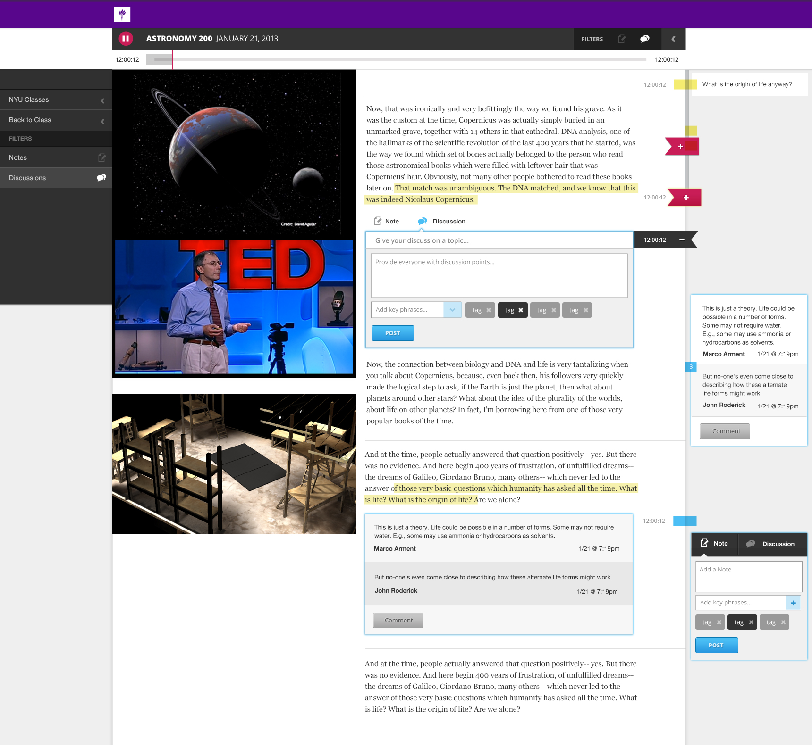

Mister Machine
Design with Code
Jesse Arnold
Designer and Co-founder
Michael Enslow
Developer and Co-founder
Lean & Agile
Pain Points
Short Timelines
Limited Resources
Blue sky features
The Way Forward
Focused Sprints
Pair Programming
Backlog Your Dreams
Bridging the Gap
Design Teams
Avoid template logic
Working outside of HTML don’t undertand material
Development Teams
Need actionable tasks
Treat the display as if it’s disposable
Product Owner
Doesn’t understand the disconnect between teams
Content and feature needs get neglected
Workflow that Works
Pattern Library
Atomic Design provides granular control
Middleman allows a designer to craft the design components in native material
Private web server for in-browser testing
DRY code for consistent coding of front-end partials
Workflow that Works
App Framework
Consume compiled CSS into asset pipeline
Final production optimization happens in framework with Grunt and Middleman's asset pipeline
Deployment of production application
Core Offerings
Visual and User Experience Design
Tech Discovery and Feasibility
Responsive, Front-end Pattern Libraries
CMS Development
Ngaged Software
Brite Class
Brite Class is a Distance Learning Platform
Students needs access to course material outside the classroom.
Leverage work of other students and engage with the professor more directly.
Teachers need tools to annotate course material and to evaluage student engagement.
Institutions need their archive of course material to be searchable and indexable as well as maintain enrollment numbers.
Core Development Team
Django Python Framework
Limited front end resources
NYU Integration with Sakai
Provides a flexible systems for teaching, learning, research and collaboration
Lacks rich classroom interactions for student engagement
Phase 1
Develop component kit for the UI
Responsive modules with pattern library and Sass
Give developers tool that could be used in future iterations
Phase 2
User experience based on updated feature set
Adapt key user interactions for native mobile client
Give UX designers tools for communicating with developers
Responsive Thinking
A Complex, Responsive UI
Similar interactions are grouped together
Key interactions set off chain of events
Responsive Thinking
Bookmarking is key interaction
It sets off Notetaking, Discussions and Questions
Student entrypoint into the content
Prototyping
Responsiveness means nothing if static
Allows you to respect surfaces and objects as they change size and relationship
Same canvas elements may house several events depending on sequence
Prototyping
Off Canvas areas produce interstitial events that affect the personality of your application
How something moves defines the character of the thing
We find new scenarios when we purposely stumble through an app, or try to break it
Prototyping
A single user story contained 36 unique wireframes with notation
A single prototype with a script can do the same job as four user stories
Zeal
Zeal Academy
Zeal is a New Teaching Platform
Provides a flexible system for teaching, learning, research and collaboration.
Design Team
Ambitious Visual Designs
Rich Interactions
Development Team
Responsive Front End built with Ember, Sass, and D3
Ruby on Rails Back End
Rapid Change Over of Resources
Usibility Testing
Bi-Weekly Usibility by pilot program participants
Core Development Team
Django Python Framework
Limited front end resources
NYU Integration with Sakai
Provides a flexible systems for teaching, learning, research and collaboration
Lacks rich classroom interactions for student engagement
Phase 1
Phase 2
Process
Process
Iterations
Iterations
Iterations
Responsive
A Million Little Pieces

A Complex UI would need to respond Mobile
Similar interactions and elements are grouped together
Key interactions set off a chain of events